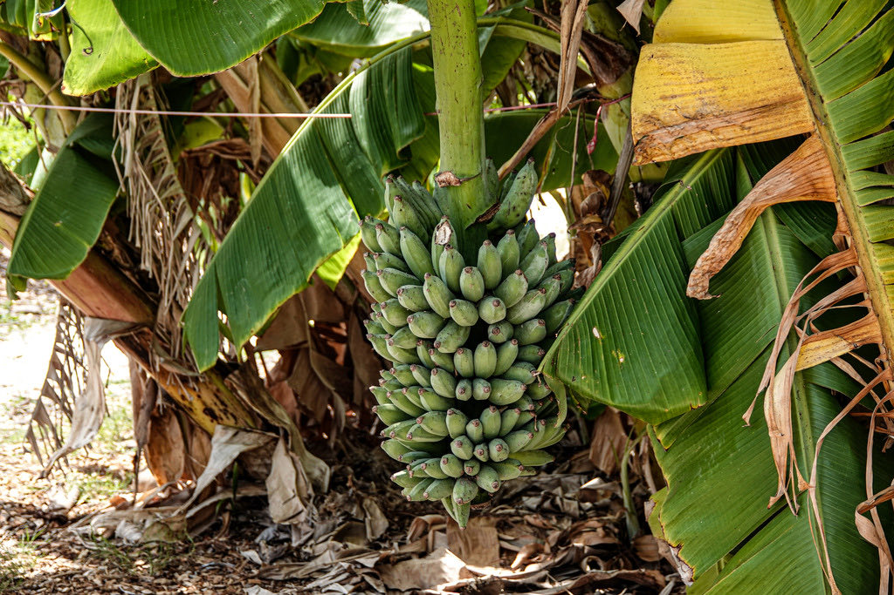

- The plantain is not a tree. That sturdy-looking trunk is a pseudostem — a tightly packed column of leaf bases that can shoot up 10 to 20 feet in a single warm season, fruit once, then die back to the ground while new shoots take over.
- Plantains account for roughly 85 percent of all banana cultivation worldwide — making them, by sheer volume, far more important globally than the sweet dessert banana most Americans eat.
- Because cultivated plantains are sterile triploids, they set fruit without any pollination at all and produce no viable seeds — every plantain plant on Earth is a clone, multiplied by cutting suckers from its parent.
- Carl Linnaeus named this plant Musa paradisiaca — 'banana of paradise' — in 1750, though the classification later proved incorrect: both his 'species' turned out to be hybrid complexes rather than true wild species.
Plantains trace their ancestry to Southeast Asia and the western Pacific, where humans first began selecting seedless, starchy hybrids from two wild species — Musa acuminata and Musa balbisiana — roughly 10,000 years ago in places like Papua New Guinea and the Malay Archipelago.
From there the plant traveled with people across the Indian Ocean to South Asia and East Africa, becoming a dietary staple long before European contact. Early in the 16th century, Portuguese mariners carried it from the West African coast to South America, and it spread through the Caribbean and tropical Americas soon after.
Florida's warm, humid south is well within the climate range where plantains thrive in the home landscape, and UF/IFAS recommends them for dooryard and small-orchard growing throughout the state's warmer zones.
- The plantain sits at the center of a slow-moving agricultural crisis. The Cavendish dessert banana — the variety stocked in virtually every North American supermarket — is a single genetic clone, and Tropical Race 4 (TR4), a soil-borne Fusarium fungus, has been dismantling Cavendish plantations across Asia, Africa, and Latin America since the 1990s.
- Because every Cavendish plant is genetically identical, the fungus finds no resistance anywhere in the global supply chain.
- Plantains tell a more complicated story. Research published in peer-reviewed journals shows that most plantain cultivars display considerably stronger resistance to TR4 than the Cavendish does — though some French-type plantains are susceptible, and the FAO cautions that a significant share of global plantain and cooking-banana germplasm remains at risk.
- That relative diversity, compared to the extreme monoculture of the Cavendish, is exactly why plant breeders and food-security researchers look to the broader Musa gene pool — including plantains — when designing a path past the current crisis.
- There is also a simple chemistry reason why plantains are cooked rather than eaten raw. According to USDA FoodData Central data, plantains carry substantially more starch and less sugar than dessert bananas, and unlike bananas, they retain much of that starch even as they ripen.
- Heat breaks down the complex starches, softens the dense flesh, and — in the case of a blackened ripe plantain hit with a hot pan — triggers caramelization that unlocks a rich, jammy sweetness entirely absent from the raw fruit. Green plantains cooked without browning taste closer to a potato than any banana.
In the wild, banana and plantain flowers are visited primarily by bats, which are drawn by the nectar of the night-opening blooms. In cultivation, the large pendant inflorescence can attract nectar-seeking birds and insects as well, though the sterile hybrid sets fruit without any pollination.
As a non-native plant with no co-evolutionary history with Florida's native fauna, the plantain does not serve as a larval host for local butterflies. Its large, soft leaves and moisture-rich pseudostem can provide cover and foraging habitat for small lizards and insects, and ripe fruit that falls or is left on the plant will attract birds and other wildlife.
Plantains are sterile triploids that set no viable seeds. Every plant is propagated vegetatively — by dividing suckers (called 'pups') from the base of an established clump. A well-sited clump will continuously produce new pups, keeping the planting going indefinitely.
The pseudostem is formed by overlapping leaf sheaths and can reach 10 to 20 feet in height. Leaves are enormous — up to 8 or 9 feet long — paddle-shaped, and bright green with a prominent midrib. New leaves unfurl from the center of the crown; in warm weather a new leaf can emerge roughly weekly.
The inflorescence emerges from the heart of the crown as a single pendant spike. It is sheathed in large, waxy purple-red bracts that peel back in sequence to reveal rows of pale yellow tubular flowers. Female flowers — the ones that become fruit — open first near the base of the bunch; male flowers open later toward the tip.
Fruit develops in clusters called 'hands,' with each hand bearing 10 to 20 individual fingers. Plantain fingers are larger and starchier than dessert bananas, with thicker skin. They are harvested green and ripen to yellow or black. Because the plant is a sterile triploid, there are no seeds inside the flesh.
After the fruit bunch is harvested, that pseudostem dies. The underground rhizome then channels energy into the next generation of pups, which grow up to replace it. A single clump can persist and produce fruit for many years in this way.
Start at the base with the colony structure. You will rarely see a single stalk in isolation; instead, look for a multi-generational family of clones — a thick parent pseudostem flanked by younger, sword-leafed pups at various stages of growth, all sharing the same underground corm.
Next, look upward into the crown for the flowering spike: a massive, heavy stalk bowing downward under its own weight, sheathed in deep purple-red waxy bracts that peel back one by one like a slow unfurling shell. Finally, study the spike itself for the fruit hands.
Note the clear transition point where young green fingers angle sharply upward in tight rows near the base of the exposed portion, while the unopened male bud hangs like a dark teardrop from the very bottom of the spike — still wrapped in its next bract, waiting.
Plantain fruit is edible and widely eaten — typically cooked when green or very ripe, not raw. The rest of the plant is not a food source but is also not toxic. The plant is considered non-toxic to people, dogs, cats, and horses. The large leaves and cut pseudostem release a watery sap that may stain skin or clothing, but it is not a skin irritant for most people.
The confusion between this plant and the common lawn weed also called 'plantain' (Plantago species) is worth a word: they share a name but nothing else. The Plantago plantains are low rosette weeds in the family Plantaginaceae; Musa × paradisiaca is a giant tropical herb in the banana family. The names diverged through separate threads of English common use.
The leaves of plantain have long served practical purposes beyond food — used throughout the tropics for wrapping food for cooking, as disposable plates, and as packing material. The pseudostem, once chopped and composted in place, returns nutrients directly to the soil around the next generation of pups.


- © Rob Carr (CC-BY-NC), via iNaturalist
- © teschaim (CC-BY-NC), via iNaturalist
- © Joanne Walker (CC-BY-NC), via iNaturalist